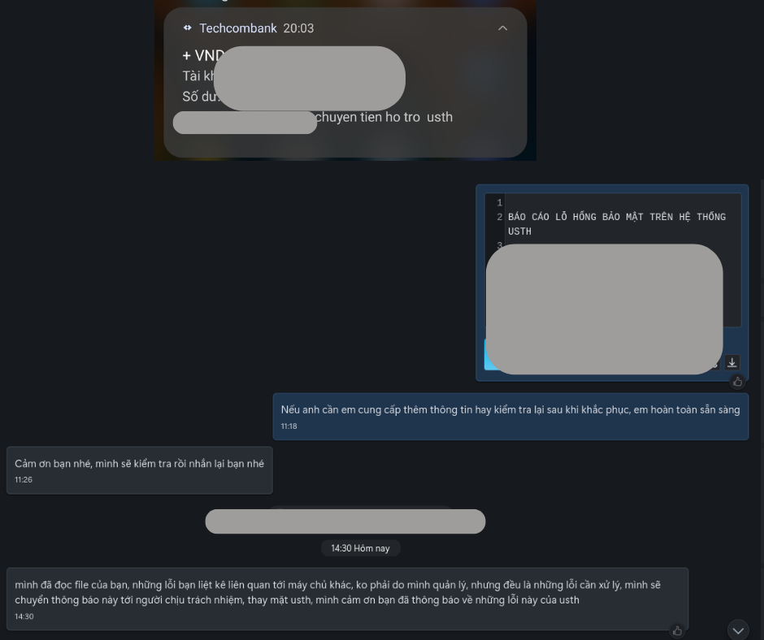

Executive Summary
During my security research engagement, I conducted a comprehensive security assessment of the publicly accessible systems belonging to the University of Science and Technology of Hanoi (USTH) and identified several critical security vulnerabilities. This report focuses on the three most significant vulnerabilities that could potentially compromise system security and user privacy.
Project Timeline
Vulnerability Details
Description:
Multiple FTP servers allow anonymous login without authentication, potentially exposing sensitive files and creating security risks.
Affected Systems:
Proof of Concept:
Security Risks:
- Unauthorized access to potentially sensitive files and directories
- Possible use as storage for malicious software or illegal content
- Expanded attack surface for deeper network penetration
- Information disclosure about internal system structure
Remediation Priority:
Immediate action required to disable anonymous access and audit exposed content.
Description:
The system allows external redirect without proper validation, enabling attackers to redirect users to malicious websites while maintaining the legitimate USTH domain in the URL.
Affected URLs:
Technical Details:
The system returns an HTTP response with header:
The browser interprets this as a protocol-relative URL and redirects directly to https://attacker.com
Security Risks:
- Phishing attacks leveraging the legitimate usth.edu.vn domain
- Potential exploitation in OAuth flows to steal tokens or credentials
- Damage to domain reputation and user trust
- Social engineering attacks using trusted domain names
Description:
The Behat testing framework configuration file is publicly accessible on the Moodle system, potentially exposing system configuration details.
Affected URLs:
Information Disclosure:
- Testing environment configuration details
- Potential system paths and parameters
- Database connection strings
- Environment variables and internal configurations
Business Impact:
While not immediately critical, this exposure could provide attackers with valuable information about the system architecture and potentially lead to further exploitation opportunities.
Official Response from USTH
USTH has officially acknowledged the security findings and expressed gratitude for the responsible disclosure.
Testing Methodology
The security vulnerabilities were identified using the following systematic approach:
- Reconnaissance: Comprehensive subdomain enumeration and service discovery
- Web Application Testing: Manual testing for common web vulnerabilities including redirects
- Network Service Analysis: Port scanning and service fingerprinting
- Configuration Review: Analysis of exposed configuration files and directories
- Risk Assessment: Evaluation of business impact and exploitability for each finding
Remediation Recommendations
1. FTP Security Hardening:
- Immediately disable anonymous FTP access on all servers
- Conduct comprehensive audit of all shared directories
- Implement authentication requirements for all FTP access
- Consider migrating to more secure file transfer protocols (SFTP/SCP)
2. Open Redirect Mitigation:
- Implement strict input validation for redirect parameters
- Use a whitelist approach for allowed redirect destinations
- Only permit redirects to internal paths or pre-approved domains
- Implement URL validation libraries to prevent bypass attempts
3. Configuration File Security:
- Remove or restrict access to exposed configuration files
- Implement proper access controls for development/testing files
- Use .htaccess or server-level configurations to block sensitive file access
- Regular audit of publicly accessible directories
Strategic Security Improvements
- Immediate Actions (Critical Priority):
- Patch identified vulnerabilities within 48 hours
- Implement monitoring for exploitation attempts
- Conduct emergency security audit of similar systems
- Short-term Improvements (30 days):
- Establish regular vulnerability scanning procedures
- Implement security code review processes
- Deploy web application firewalls for additional protection
- Long-term Security Program:
- Develop comprehensive security policies and procedures
- Conduct regular penetration testing and security assessments
- Implement security awareness training for staff
- Establish incident response and vulnerability management processes
Responsible Disclosure Statement
This security assessment was conducted in accordance with responsible disclosure principles and ethical hacking guidelines. All findings were reported directly to USTH's IT security team prior to publication. This report serves educational purposes and aims to improve cybersecurity awareness in academic institutions. No unauthorized access to sensitive data was attempted or achieved during this assessment.